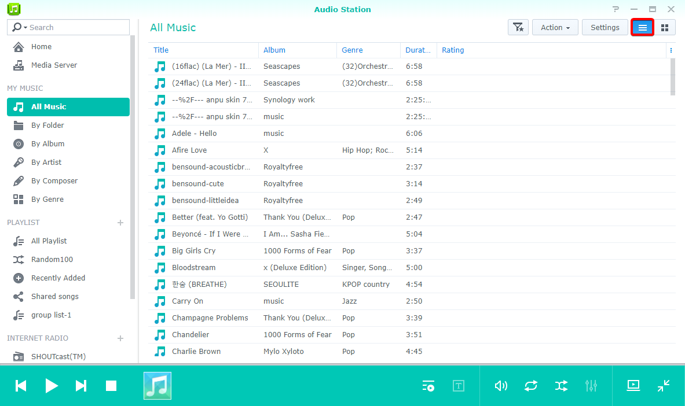

Обзор
С помощью Audio Station можно упорядочивать, просматривать и воспроизводить хранящуюся на устройстве Synology NAS музыку по Интернету. Audio Station также поддерживает множество типов файлов, поэтому вы можете слушать музыку в любом формате. Кроме того, можно скачать мобильное приложение DS audio, которое дополнит Audio Station и позволит обращаться к музыкальным композициям на Synology NAS, если вы в пути.
1. Установка Audio Station
- Выберите Центр пакетов и нажмите Audio Station. Нажмите Установить.

2. Сохранение аудиофайлов в папке с музыкой
- Перейдите к File Station > музыка и нажмите Загрузка.
- Выберите файлы для загрузки в папку музыка на локальном компьютере.

3. Просмотр музыки
После загрузки музыкальных файлов их можно воспроизводить и выполнять поиск музыки на Audio Station. Если вам нужен доступ и возможность просматривать музыкальные файлы, когда вы находитесь вне локальной сети, рекомендуется включить службу QuickConnect, выбрав Панель управления > QuickConnect. Если у вас нет учетной записи Synology, ее можно создать за несколько минут и затем указать в DiskStation свой идентификатор QuickConnect ID. Если эта возможность включена, вы можете войти в DSM и получить доступ к своей музыке из любого места. Также можно использовать свой идентификатор QuickConnect ID для входа в DS audio без необходимости запоминания своего IP-адреса.
3.1 Моя музыка
Библиотека Моя музыка на панели слева содержит музыку в общей папке музыка и других проиндексированных папках Synology NAS. В разделе Моя музыка музыка упорядочена по категориям (например, По папке, По альбому, По исполнителю), чтобы вам было проще найти музыку в соответствии с вашими предпочтениями. Можно закрепить любимые музыкальные коллекции на начальном экране и просматривать композиции по жанрам в разделе Рекомендуемый жанр. Чтобы найти песню, можно нажимать на каждую категорию или выбрать нужную категорию в меню в строке поиска.

3.2. Режимы просмотра
Значки в верхнем правом углу Audio Station позволяют переключаться между различными режимами просмотра музыкальной библиотеки.
- Режим Просмотреть список позволяет просматривать музыкальные композиции в виде списка, в котором отображаются названия, исполнители, альбомы, продолжительность, номер дорожки и рейтинг композиций. 
- Режим Изображение отображает имя дорожки, название и изображение альбома.
- Режим Очередь воспроизведения отображает очередь воспроизведения в полноэкранном режиме, а также обложки альбомов, названия и тексты композиций.


4. Публичный общий доступ
Функция публичного общего доступа Audio Station позволяет обмениваться композициями с другими пользователями. Создается ссылка, которую вы можете отослать пользователям вне сети или тем из них, у кого нет Synology NAS. Когда они получат ссылку, то смогут прослушивать композиции.
4.1. Предоставление другим пользователям общего доступа к композициям
- Нажмите правой кнопкой композицию (композиции), которыми вы хотите поделиться, и выберите Сделать публичным.
- Предусмотрено два варианта предоставления общего доступа к композициям другим пользователям:
- Если выбрать одну композицию для общего доступа, нужно в диалоговом окне установить флажок рядом с Сделать публичным, чтобы включить ссылку общего доступа.
- Если выбрать несколько композиций для общего доступа, будет создан список воспроизведения. Вы можете присвоить имя списку воспроизведения и определить срок действия ссылки, установив флажок рядом с Настроить срок действия и нажав «OK».


- Скопируйте ссылку и вставьте ее для пользователя, с которым вы хотите поделиться списком воспроизведения, или нажмите Перейти к ссылке для непосредственного перехода по ссылке.

5. Упорядочение и воспроизведение музыки на мобильных устройствах
DS audio работает на iPad/iPhone/iPod touch и устройствах на базе Android. Приложение можно бесплатно скачать в Apple App Store и Google Play. Также можно просканировать QR-код, и скачивание начнется незамедлительно.